Nordeste
Comida mais temperada, com dendê, leite de coco e influência africana.

Acarajé
Bolinho de feijão frito no azeite de dendê.
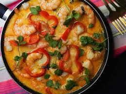
Moqueca
Peixe com leite de coco e dendê.
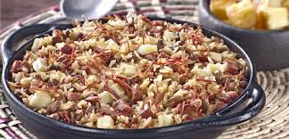
Baião de Dois
Arroz com feijão e carne.
Sudeste
Mistura de tradições, comida variada e mais urbana.

Feijoada
Um dos pratos mais famosos do Brasil.
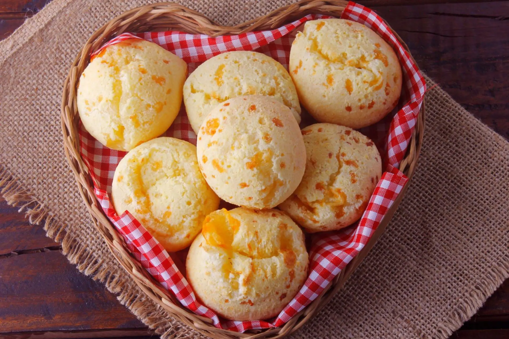
Pão de Queijo
Típico de Minas Gerais.
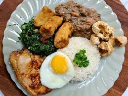
Virado à Paulista
Prato tradicional paulista completo.
Centro-Oeste
Pratos rurais, com carnes, peixes de rio e frutos do cerrado.
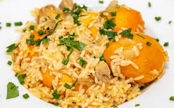
Arroz com Pequi
Prato típico com fruto regional.
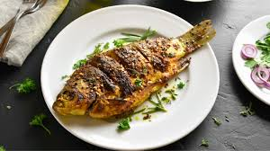
Pacu Assado
Peixe muito consumido na região.
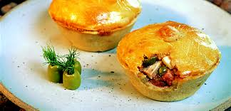
Empadão Goiano
Torta recheada com vários ingredientes.
Norte
Uso de ingredientes amazônicos (peixes, mandioca, tucupi), sabores exóticos.
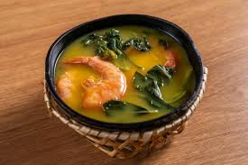
Tacacá
Caldo quente com tucupi e jambu.
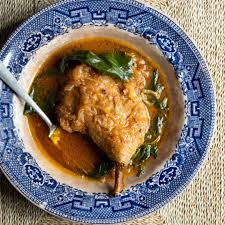
Pato no Tucupi
Prato tradicional amazônico.
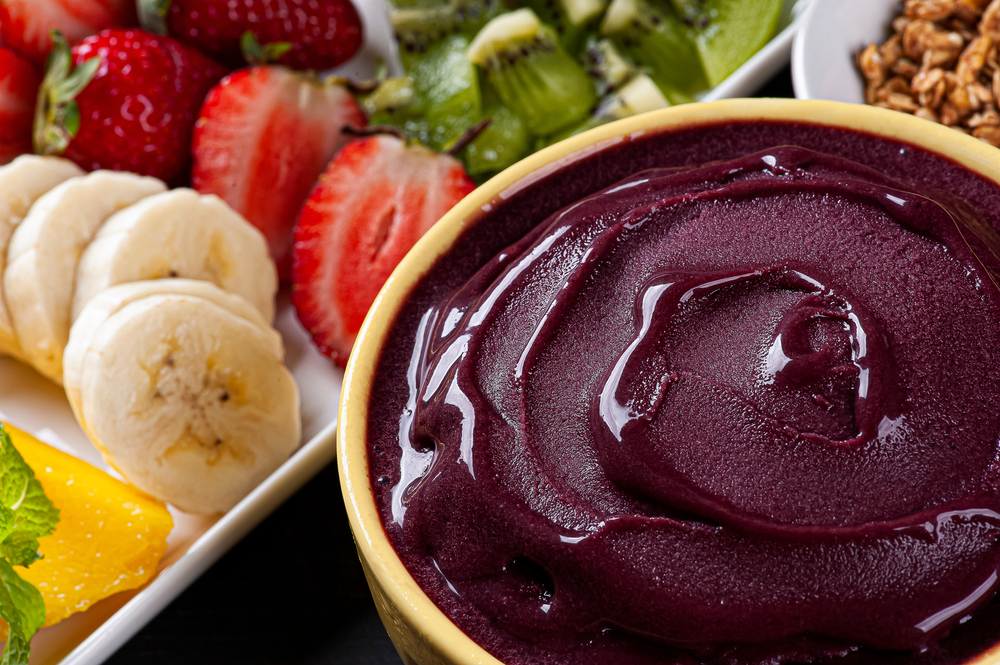
Açaí
Consumido salgado na região.
Sul
Influência europeia, com carnes, massas e pratos mais “pesados”.

Churrasco Gaúcho
Carne assada tradicional.
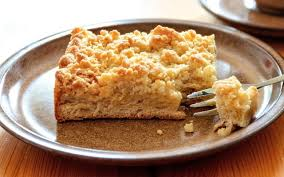
Cuca
Tipo de bolo com influência alemã.
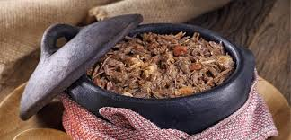
Barreado
Prato típico do Paraná.